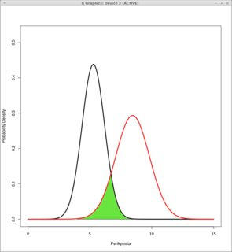
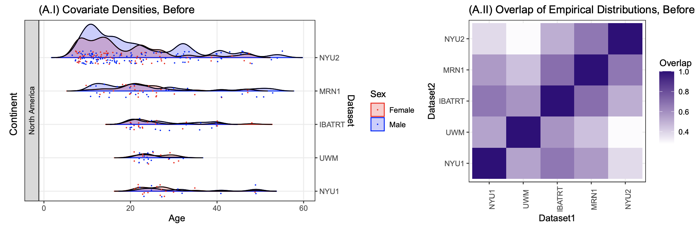
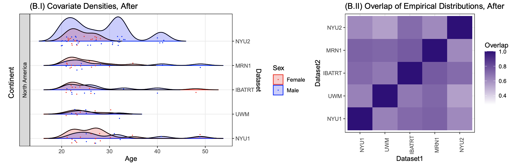
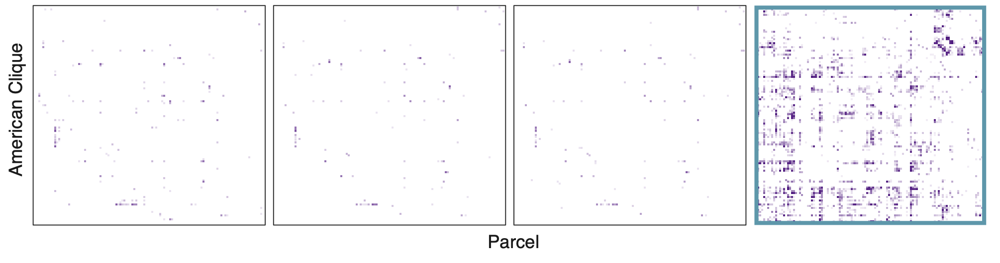
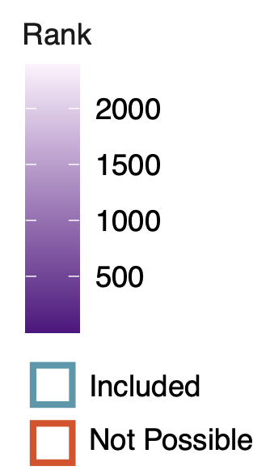
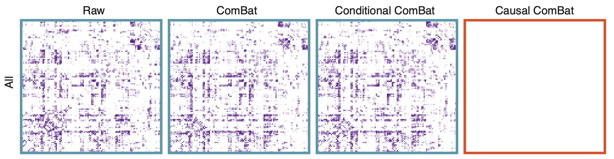
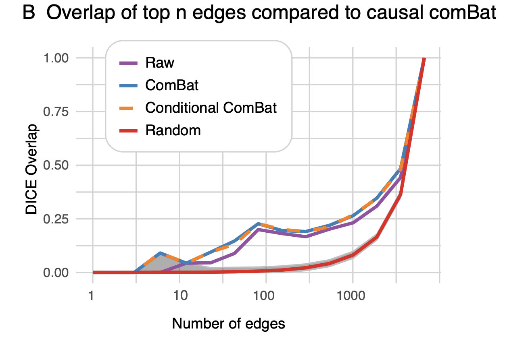
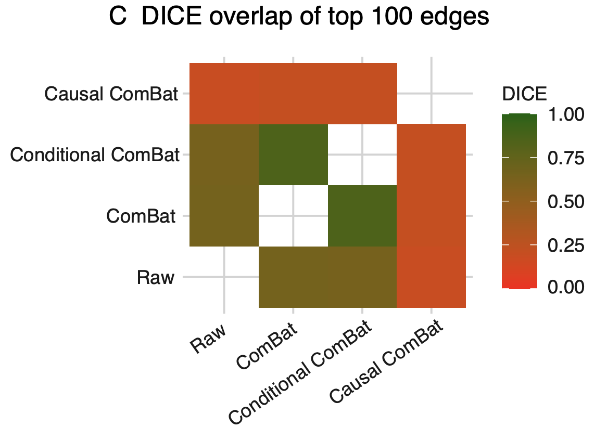

<!-- TODO add slide numbers & maybe slide name --> ### Batch Effects are Causal Effects  Eric W. Bridgeford | {Biostatistics, BME, CIS}<br> [ericwb95@gmail.com](mailto:ericwb95 at gmail dot com) | <https://neurodata.io/talks/batcheffects.html> <!-- <br><br><br> --> <!-- <img src="images/logo_jhu.png" STYLE="HEIGHT:50px;"/> --> --- name:talk ### Outline - [Motivation](#defn) - [Estimating Batch Effects](#statistics) - [Removing Batch Effects](#remove) - [Real Data](#results) - [Discussion](#disc) --- name:defn ### Outline - Motivation - [Estimating Batch Effects](#statistics) - [Removing Batch Effects](#remove) - [Real Data](#results) - [Discussion](#disc) --- ### Modern neuroimaging data - Neuroimaging data is big and costly - Expansive mega-studies collected globally - Unprecedented sample diversity (demographically) and sizes <!-- - generalizability --> -- --- ### Sources of variability are not well understood - Batch Effect: the impact of the data collection procedure (measurement device, measurement protocol, season, etc.) on the data collected - Demographic Effects: impact on the data of scientifically "interesting" characteristics of the object under study - Site Effect = Demographic Effects + Batch effects --- ### Batch effects are confounded by demographic effects - Difficult to parse site effects into the components due to batch - We want to <span style="color:red">mitigate batch effects</span> while .ye[preserving demographic effects] - Approaches which properly isolate the batch effect while deconfound the demographic effect are lacking --- ### How do we address batch effects? - Skip to correction (e.g., SVA, ComBat, etc.)? - Focus on estimation with linear models? Proposal: leverage techniques from .ye[causal inference] to yield strategies which are both theoretically and empirically sensible for batch effect analyses --- name:statistics ### Outline - [Motivation](#defn) - Estimating Batch Effects - [Removing Batch Effects](#remove) - [Real Data](#results) - [Discussion](#disc) --- ### General Notation | Symbol | Interpretation | | --- | --- | | $Y$ | random variable | | $y$ | realization of random variable $Y$ | | $f(y)$ | distribution of $Y$ evaluated at $y$ | | $f(y\vert x)$ | distribution of $Y$ at $y$, conditional on $X$ at $x$ | --- ### Specific Notation | Symbol | Interpretation | | --- | --- | | $Y$ | outcome measurement (measured) | | $T$ | exposure (batch) | | $X$ | covariates (measured) | | $Z$ | covariates (unmeasured) | <!-- - $f(y | t, x, z)$: the true outcome model, for any covariates $(x,z)$ --> <!-- - we .ye[cannot] estimate this without assumptions, due to unmeasured covariates $Z$ --> --- ### Causal Batch Effect - $f_{x,z}(y|t)$: the true outcome, conditioned on the exposure, averaged over measured .ye[and] unmeasured covariates $$\forall t \in [K]: \;\;\;\; f_{x,z}(y|t) = \int f(y|t,x,z) f(x,z) \;d(x,z)$$ - Causal Effects are .ye[functions] of the set $\\{f_{x,z}(y|t)\\}_t$ - Causal Batch Effect: $$f\_{x,z}(y|t) \neq f\_{x,z}(y|t')$$ --- #### Causality is "easier" if we know everything .ye[impactful] <img src="images/batch_effects/CoRRSimple.png" STYLE="HEIGHT:400px;"/> - conditioning on measured/"observed" covariates sufficient to establish causality --- ### Causality and fear of the unknown(s) <img src="images/batch_effects/CoRRProblem.png" STYLE="HEIGHT:400px;"/> - assumptions (potentially .ye[completely unreasonable]) needed to proceed --- ### Typical neuroimaging covariates are much more complicated <img src="images/batch_effects/CoRR_dag.png" STYLE="WIDTH:700px;"/> --- ### Confounding is the enemy <img src="images/batch_effects/CoRR_soln.png" STYLE="HEIGHT:400px;"/> - If we can address the confounding, we can obtain unbiased causal estimates --- ### Associational Effect - Observe $\left(y_i, t_i\right)$ for all $i \in [n]$ - $f(y|t)$: distribution of outcome, conditional on batch $$f(y|t) \neq f(y|t')$$ - estimated with $\texttt{dcorr}$ -- - Causal if measured and unmeasured covariates ($X$ and $Z$) are non-confounding - If batches differ on demographics, for example, then not causal --- ### Conditional Effect - Observe $\left(y_i, t_i, x_i\right)$ for all $i \in [n]$ - $f(y|t,x)$: distribution of outcome, conditional on batch and measured covariates $$f(y|t,x) \neq f(y|t',x)$$ - estimated with conditional $\texttt{dcorr}$ -- Causal if .ye[strong ignorability] holds 1. Exposure $T$ independent of the outcome $Y$, conditional on covariates $X$ and $Z$ 2. Covariate distributions overlap (propensity overlap) --- ### Adjusted Effect - Observe $\left(y_i, t_i, x_i\right)$ for all $i \in [n]$ - Adjust samples such that the propensities are equal, yielding adjusted conditional distributions $\tilde f(y|t,x)$ <!-- and $\tilde f(y|t',x)$ --> - Solves the issue of covariate overlap from the conditional effect $$\tilde f(y|t,x) \neq \tilde f(y|t',x)$$ - estimated with .ye[matched] conditional $\texttt{dcorr}$ -- - Still requires exposure $T$ independent of the outcome $Y$, conditional on covariates $X$ and $Z$ --- ### Causal Crossover Effect - Observe $\left(y_i^{(t)}, t, x_i^{(t)}\right)$ for all $t \in [K], i \in [n]$ - $f\left(y^{(t)}\big|t,x^{(t)}\right)$: distribution of outcome at exposure $t$, conditional on exposure $t$ and covariates at $t$ $$f\left(y^{(t)}\big|t,x^{(t)}\right) \neq f\left(y^{(t')}\big|t',x^{(t')}\right)$$ - estimated with $\texttt{dcorr}$ -- - Traits/histories are constant to individuals, and therefore perfectly balanced across both groups -- - States may be different, as they are functions of location & time - Causal if no unmeasured confounding states --- ### Crossover design removes .ye[most] confounding <img src="images/batch_effects/CoRR_cross_dag.png" STYLE="WIDTH:700px;"/> --- name:remove ### Outline - [Motivation](#defn) - [Estimating Batch Effects](#statistics) - Removing Batch Effects - [Real Data](#results) - [Discussion](#disc) --- ### Limitations of Existing Approaches for Site Effect Removal - Existing techniques ignore the .ye[strong ignorability criterion], and therefore, do not provide valid causal estimands under reasonable assumptions - ComBat, Conditional ComBat, Z-Scoring, etc. may remove demographic signal <!-- : 1. Exposure $T$ independent of the outcome $Y$, conditional on covariates $X$ and $Z$ 2. Covariate distributions overlap (propensity overlap) --> --- ### Causal ComBat Given $K$ datasets: -- 1. Identify smallest dataset, $k'$, as the exposure -- 2. Match individuals from unexposed datasets $k\neq k'$ to the exposure individuals -- 3. Discard individuals from exposed dataset who do not have matches across all unexposed datasets -- 4. Discard individuals from unexposed datasets who are not matched to retained exposed individuals -- 5. Perform Conditional ComBat on retained exposed and unexposed individuals -- Causal if exposure $T$ independent of the outcome $Y$, conditional on covariates $X$ and $Z$ --- name:results ### Outline - [Motivation](#defn) - [Estimating Batch Effects](#statistics) - [Removing Batch Effects](#remove) - Real Data - [Discussion](#disc) --- ### CoRR mega-study <img src="images/batch_effects/demo.png" STYLE="WIDTH:700px;"/> --- ### Connectomes from CoRR mega-study <img src="images/batch_effects/conn.png" STYLE="WIDTH:700px;"/> - disparity across young/old, male/female - homotopic effect --- class: split-60 ### Associational & conditional effects always exist .column[ <img src="images/batch_effects/asscond.png" STYLE="HEIGHT:500px;"/> ] .column[ - Unclear whether effect detected is due to a batch effect or a demographic effect ] --- class: split-60 ### Causal effects only sometimes estimable (due to overlap) .column[ <img src="images/batch_effects/caus.png" STYLE="HEIGHT:500px;"/> ] .column[ - most datasets cannot even be run with matched partial dcorr - we .ye[cannot determine] for most effects whether the effect is due to batch or demographic ] --- ### Does matching actually improve covariate overlap? - The goal of the matching procedure for Causal DCorr/ComBat is to produce .ye[subsets] of datasets which are demographically .ye[similar] - Does it actually do the job? - How to quantify: "AUC" of two distributions  --- ### Estimating covariate overlap - let $\mathcal D$ represent the triplet of possible (continent, sex, age) pairings across the datasets - $f(c,s,a|k)$ is the .ye[demographic distribution] for dataset $k$ - an estimate of the .ye[covariate overlap] between datasets $k$ and $l$ is: $$\text{overlap}\_{k, l} = \int_{(c, s, a) \in \mathcal D} \min\left(\hat f(c, s, a | k), \hat f(c,s,a| l)\right)\text{d}(c,s,a)$$ ---   --- ### Does using causality actually give us a different answer? - If we use Causal ComBat instead of Conditional ComBat, do we actually end up with different answers for statistical inference? - for each edge of the connectome, investigate whether there is a sex effect (conditional on age) across individuals - If leveraging causality is irrelevant, we would expect similar statistical inference for the chosen task --- ### Restricting to the American Clique - Causal ComBat can only be performed on the American Clique, the matched subset of individuals with similar demographic variables from $5$ of the CoRR datasets - If we subset the Conditional ComBat corrected connectomes to the same individuals, do we obtain the same answer? | Raw | ComBat | Cond. ComBat | Causal ComBat | | --- | --- | --- | --- |   -- - Not quite... many more significant edges for Causal ComBat --- ### What if we don't subset at .ye[all]? - Since we had to "throw away" data to use Causal ComBat, what if we hadn't thrown away data at all? - Note: Causal ComBat cannot be run on all of the data (due to lack of covariate overlap)  -- - There are more significant edges, but are they the .ye[same] significant edges? --- ### Causal ComBat produces disparate statistical inference - for each batch effect removal strategy, identify the top $n$ edges (by effect size), and compare to the top $n$ edges produced by Causal ComBat - DICE of $1$: top edges are in perfect agreement, DICE of $0$: edges have no overlap   --- ### Causal ComBat produces disparate statistical inference - Internal vs. external validity conflict -- - "We exchange a (potentially) fake 10 dollar bill for a real 5 dollar bill" --- name:disc ### Outline - [Motivation](#defn) - [Estimating Batch Effects](#statistics) - [Removing Batch Effects](#remove) - [Real Data](#results) - Discussion --- ### Contributions 1. Define batch effects as a problem in causal inference -- 2. Illustrate existing analyses of batch effects in neuroimaging amount to associational or conditional effects, and inadequately account for confounding -- 3. Show how batch effects can be estimated and tested on multivariate, non-euclidean batches using kernel methods -- 4. Provide an approach for batch effect correction that pays attention to confounding biases in the data -- 5. Showed that Causal ComBat produces different statistical inference from competing techniques, potentially drawing questions about statistical validity in neuroimaging --- ### Acknowledgements <div class="small-container"> <img src="faces/ebridge.jpg"/> <div class="centered">Eric Bridgeford</div> </div> <div class="small-container"> <img src="faces/bcaffo.jpg"/> <div class="centered">Brian Caffo</div> </div> <div class="small-container"> <img src="faces/powell.jpg"/> <div class="centered">Mike Powell</div> </div> <div class="small-container"> <img src="faces/blank.png"/> <div class="centered">Anton Alyakin</div> </div> <div class="small-container"> <img src="faces/mm.jpg"/> <div class="centered">Michael Milham</div> </div><div class="small-container"> <img src="faces/yummy.jpg"/> <div class="centered">yummy</div> </div> <div class="small-container"> <img src="faces/lion.jpg"/> <div class="centered">lion</div> </div> <div class="small-container"> <img src="faces/violet.jpg"/> <div class="centered">baby girl</div> </div> <div class="small-container"> <img src="faces/family.jpg"/> <div class="centered">family</div> </div> <div class="small-container"> <img src="faces/earth.jpg"/> <div class="centered">earth</div> </div> <div class="small-container"> <img src="faces/milkyway.jpg"/> <div class="centered">milkyway</div> </div> <img src="images/funding/nsf_fpo.png" STYLE="HEIGHT:95px;"/> <img src="images/funding/nih_fpo.png" STYLE="HEIGHT:95px;"/> <img src="images/funding/darpa_fpo.png" STYLE=" HEIGHT:95px;"/> <img src="images/funding/iarpa_fpo.jpg" STYLE="HEIGHT:95px;"/> <img src="images/funding/KAVLI.jpg" STYLE="HEIGHT:95px;"/> <img src="images/funding/schmidt.jpg" STYLE="HEIGHT:95px;"/> - [Code](https://github.com/neurodata/batch_effects) - Questions?